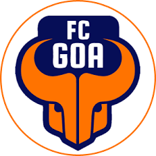
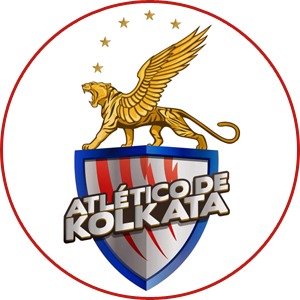
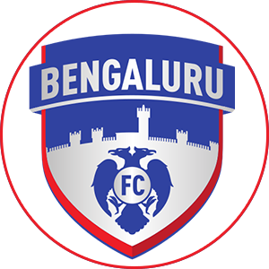
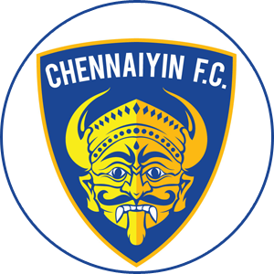
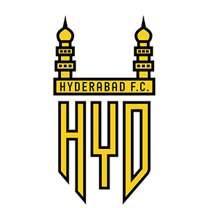
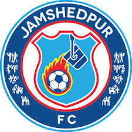
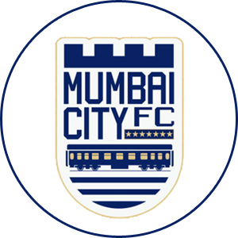
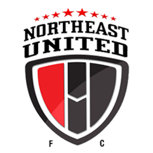
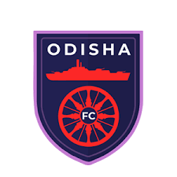

- First League : 2014
- Tournament : Double Round-Robin and Playoffs
- Number of Teams : 10
- Current Champions : ATKMB FC
- Most Successful : ATKMB and Chennaiyin FC
- Website : indiansuperleague.com
- Total seasons: 6
- Current Sponsor : Hero
- Prize Money : 8 Crore
- Current Broadcaster : Star Sports
Indian Super League
The Indian Super League (ISL) is a professional football league in India. At the top of the Indian league system, it is the country's joint-premier football league competition, together with the I-League. The league is currently contested by ten teams and each season runs from October to March. Each team currently plays 18 matches during the league stage, with the top four qualifying for the playoffs. The season then culminates with the ISL Final to determine the champion. The league has been officially known as the Hero Indian Super League since its inception, due to a sponsorship agreement with Hero MotoCorp.The competition was founded on 21 October 2013 with the goal of growing the sport of football in India and increasing its exposure in the country. The league began in October 2014 with eight teams. During its first three seasons, the competition operated without official recognition from the Asian Football Confederation (AFC), the governing body for the sport in Asia. The competition was also structured along the same lines as the Indian Premier League, the country's premier Twenty20 cricket competition. Each season lasted just 3 months, from October to December, and matches were held daily. However, prior to the 2017–18 season, the league expanded to ten teams, expanded its schedule to six months, and earned recognition from the AFC.Unlike other football leagues around the world, the Indian Super League does not use promotion and relegation, choosing to grow through expansion, similar to Major League Soccer in the United States.Since the league's inaugural season, a total of three clubs have won the ISL Final and one club has won the ISL League Winners Shield, the trophy awarded to the top team at the end of the league stage. The current ISL champions are ATK. The club is also the league's most successful, having won the title three times. The current Winners Shield trophy holder is Goa, who have won it once since the trophy was unveiled during the 2019–20 season.
ISL Teams

FC Goa

ATKMB FC

Bengaluru FC

Chennaiyin FC

Hyderabad FC

Jamshedpur FC

Kerala Blasters FC

Mumbai City FC

NorthEast United FC

Odisha FC
ISL Facts
Chennaiyin and ATK are two most successful teams with two titles each.